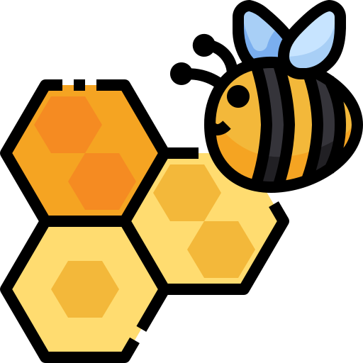

¿Cómo hacemos nuestro compost?
Te contamos cómo transformamos los residuos orgánicos de la comunidad en abono rico en nutrientes para recuperar nuestro suelo.
Aprendizaje
Las abejas, nuestras mejores aliadas
La importancia de los polinizadores en la huerta y cómo cuidamos a las abejas para que el ecosistema se mantenga en equilibrio.
BiodiversidadRecuperando nuestro suelo
Un recorrido por las técnicas agroecológicas que usamos para devolverle la vida a la tierra de Hayuelos.
Suelo